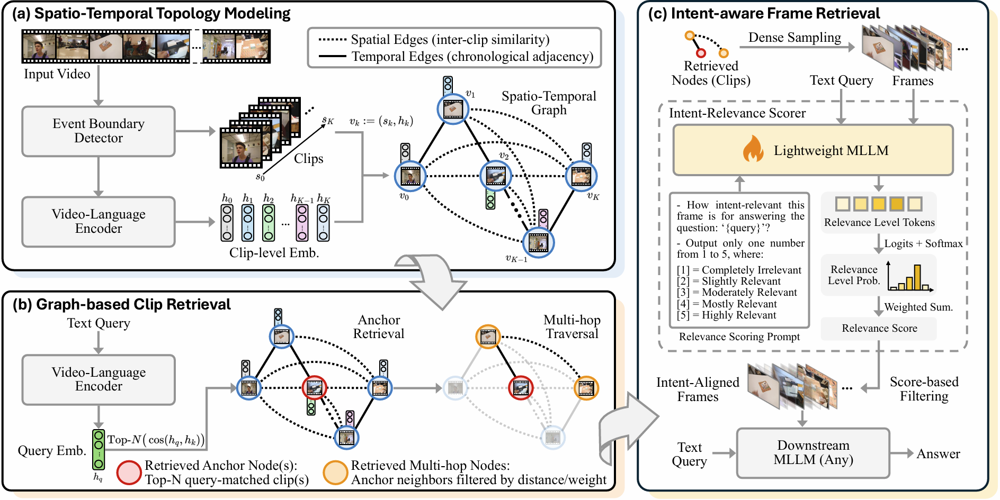
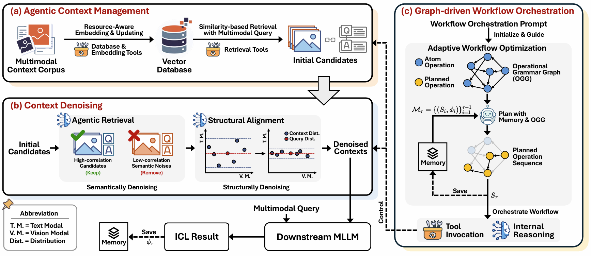
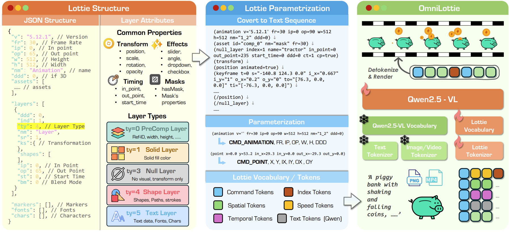
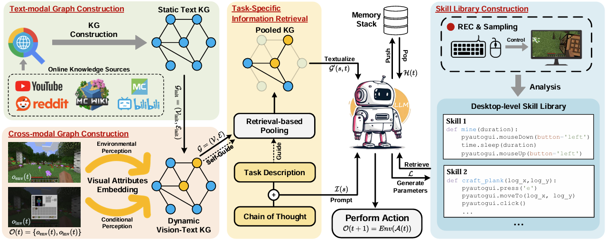
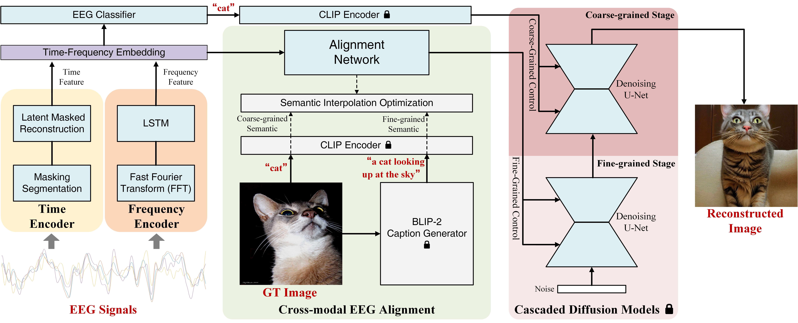
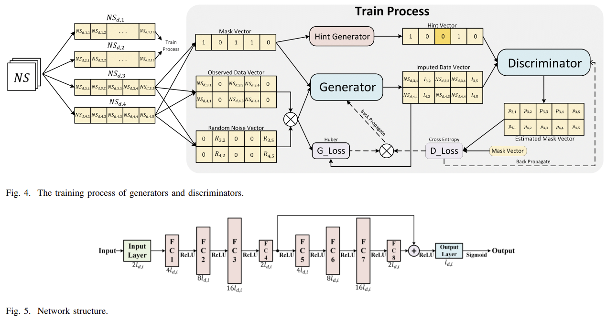
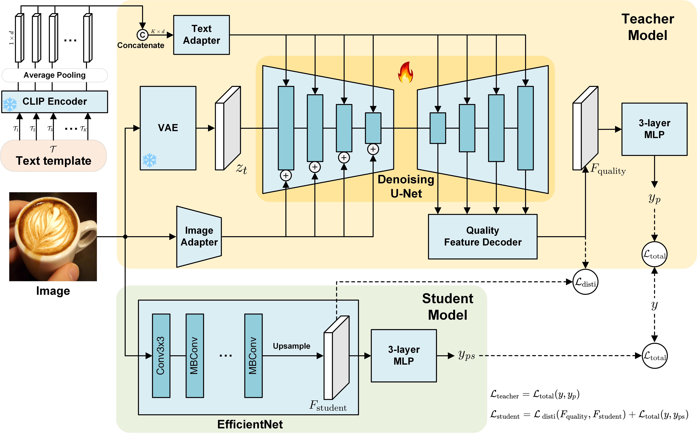

Honghao Fu
Ph.D Student @ University of Queensland
Email: honghao.fu@uq.edu.au · hfu006@e.ntu.edu.sg
About Me
I am currently a first-year Ph.D. student at the School of Electrical Engineering and Computer Science, the University of Queensland, supervised by Prof. Yujun Cai. I was an Intern Researcher at StepFun, working closely with Dr. Gang Yu. Before that, I was an Intern Researcher of the AI Thrust at The Hong Kong University of Science and Technology (Guangzhou), supervised by Prof. Hao Wang. I received my M.Sc at the School of Electrical and Electronic Engineering, Nanyang Technological University, supervised by Prof. Bihan Wen and Dr. Yufei Wang. Prior to this, I obtained my B.Eng. from Southeast University.
- Artificial Intelligence
- Large Language Models
- Agentic Systems
- Multimodal Understanding
Education
Work Experience
Services
Conference Reviewer: ICLR, NeurIPS, CVPR, ICML, ACL, ACM-MM, ICASSP, IJCNN, etc.
Journal Reviewer: IEEE Transactions on Intelligent Transportation Systems (T-ITS), IEEE Internet of Things Journal (IoT), Journal of Selected Topics in Signal Processing (JSTSP), Pattern Recognition (PR), Neural Networks, Neurocomputing, etc.
Selected Publications



VistaWise: Building Cost-Effective Agent with Cross-Modal Knowledge Graph for Minecraft
EMNLP 2025 (main) CORE A* CCF-B
PDF
Code


SDR-GAIN: A High Real-Time Occluded Pedestrian Pose Completion Method for Autonomous Driving
IEEE Trans. ITS, 2025 Q1 (IF=8.4) CCF-B
PDF
Code

Full Publication List
- Honghao Fu, Miao Xu, Yiwei Wang, Dailing Zhang, Jun Liu, and Yujun Cai. (2026). VideoStir: Understanding Long Videos via Spatio-Temporally Structured and Intent-Aware RAG. ACL 2026 Main. (Oral, Top 0.8%) [Paper]
- Honghao Fu, Yuan Ouyang, Kai-Wei Chang, Yiwei Wang, Zi Huang, and Yujun Cai. (2026). ContextNav: Towards Agentic Multimodal In-Context Learning. ICLR 2026. [Paper]
- Yiying Yang, Wei Cheng, Sijin Chen, Honghao Fu, Xianfang Zeng, Yujun Cai, Gang Yu, and Xingjun Ma. (2026). OmniLottie: Generating Vector Animations via Parameterized Lottie Tokens. CVPR 2026. [Paper]
- Honghao Fu, Junlong Ren, Qi Chai, Deheng Ye, Yujun Cai, and Hao Wang. (2025). VistaWise: Building Cost-Effective Agent with Cross-Modal Knowledge Graph for Minecraft. EMNLP 2025 Main. [Paper]
- Honghao Fu, Zhiqi Shen, Jing Jih Chin, and Hao Wang. (2025). BrainVis: Exploring the Bridge between Brain and Visual Signals via Image Reconstruction. ICASSP 2025. [Paper]
- Honghao Fu, Yongli Gu, Yidong Yan, Yilang Shen, Yiwen Wu, and Libo Sun. (2025). SDR-GAIN: A High Real-Time Occluded Pedestrian Pose Completion Method for Autonomous Driving. IEEE Transactions on Intelligent Transportation Systems. (Q1, IF=8.4) [Paper]
- Yongli Gu, Xiang Yan, Hanlin Qin, Naveed Akhtar, Shuai Yuan, Honghao Fu, Shuowen Yang, and Ajmal Mian. (2025). HDTCNet: A hybrid-dimensional convolutional network for multivariate time series classification. Pattern Recognition. (Q1, IF=7.5) [Paper]
- Shiyu Liu, Yucheng Han, Peng Xing, Fukun Yin, Rui Wang, Wei Cheng, Jiaqi Liao, Yingming Wang, Honghao Fu, ..., Gang Yu, and Daxin Jiang. (2025). Step1X-Edit: A Practical Framework for General Image Editing. arXiv:2504.17761. (Technical Report) [Paper]
- Junlong Ren, Gangjian Zhang, Honghao Fu, Pengcheng Wu, and Hao Wang. (2025). WaMo: Wavelet-Enhanced Multi-Frequency Trajectory Analysis for Fine-Grained Text-Motion Retrieval. arXiv:2508.03343. (Under Review) [Paper]
- Honghao Fu, Yufei Wang, Wenhan Yang, and Bihan Wen. (2024). DP-IQA: Utilizing Diffusion Prior for Blind Image Quality Assessment in the Wild. arXiv preprint arXiv:2405.19996. (Under Review) [Paper]
- Honghao Fu, Yilang Shen, Yuxuan Liu, Jingzhong Li, and Xiang Zhang. (2023). SGCN: A multi-order neighborhood feature fusion landform classification method based on superpixel and graph convolutional network. International Journal of Applied Earth Observation and Geoinformation. (Q1, IF=8.6) [Paper]